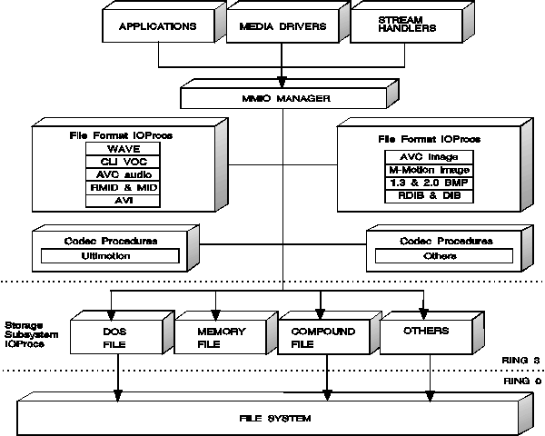

The MMIO subsystem of OS/2 multimedia isolates applications, media control
drivers, and stream handlers from data-specific processing in the same way
that the media control interface buffers applications from device-specific
processing. Applications send MMIO functions through the MMIO Manager,
which uses I/O procedures (IOProcs) to manipulate specific types of multimedia
data. The following figure illustrates the procedures available with the
installation of OS/2 multimedia. *